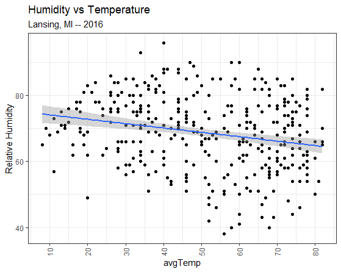
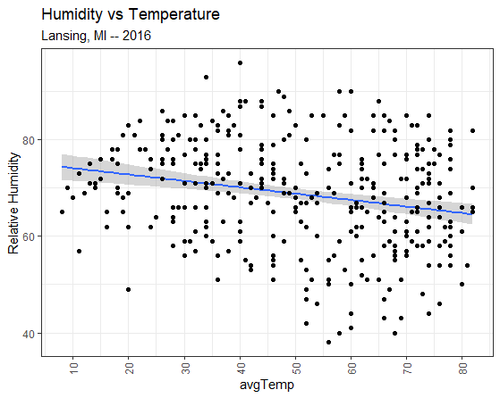

Functions 3
Dataframe Modifications
The script for this lesson is here (right-click, Save link as)
The Lansing2016Noaa.csv is here (left-click)
We are going to use the GGPlot2 package so we need to add the GGPlot library to the script.
rm(list=ls()); # clear the Environment tab
options(show.error.locations = TRUE); # show line numbers on error
library(package=ggplot2); # include all GGPlot2 functions
This line gives your script access to all of the functions in the GGPlot2 package. This package is technically the third version of GGPlot -- but no one uses the first two versions (ggplot and ggplot1) anymore.
For many years, RBase was the main plotting tool in R and it was based somewhat on the metaphor of drawing on a transparency. GGPlot is based more on a building metaphor.
The full list of functions in the GGPlot package is here:
https://ggplot2.tidyverse.org/reference/
In GGPlot, one way to think about the functions is that they are components of a plot. Each time you call a GGPlot function, you are either adding a component to a plot or modifying an existing component. For this class, I refer to the functions in GGPlot as components.
The arguments within the functions can be thought of as subcomponents of the components.
A helpful resource is the cheat sheets, which exists for many popular packages -- the cheat sheet for GGPlot2 is the first one on this page:
https://www.rstudio.com/resources/cheatsheets/
We are going to create a scatterplot in GGPlot using data from Lansing2016NOAA.csv
# read in CSV file and save the content to weatherData
weatherData = read.csv(file="data/Lansing2016NOAA.csv");
The scatterplot will be average temperature (avgTemp column) vs. humidity (relHum column).
The code to create a scatterplot using GGPlot is:
#### Part 1: Create a scatterplot ####
plot1 = ggplot( data=weatherData ) +
geom_point( mapping=aes(x=avgTemp, y=relHum) );
plot(plot1);
Source the script and this plot appears:
Our first plot using GGPlot -- note that the x and y-axis labels match the mapped name
Below, I highlight the argument names in the code (which, in GGPlot, are the subcomponents):
#### Part 1: Create a scatterplot ####
plot1 = ggplot( data=weatherData ) +
geom_point( mapping=aes(x=avgTemp, y=relHum) );
plot(plot1);
We can remove the argument name and the script will execute exactly the same (i.e., the same plot will be rendered):
#### Part 2: Same scatterplot without argument names ####
plot2 = ggplot( weatherData ) +
geom_point( aes(avgTemp, relHum) );
plot(plot2);
You will often see people not using the argument names and, for the example above, this works. But it only works because we only used the default arguments for each function and used the arguments in the same order as they appeared in the function.
In this class, we will (almost always) use argument names because using argument names:
The one exception where we will not use argument names is:
plot(plotData) # no argument name used here
instead of
plot(x=plotData) # x is the argument name
There are multiple functions in R and GGPlot where the argument name x is used generically as the name for the first argument in a function. This is not intuitive when plotting because x is also used to refer to data that goes on the x-axis.
We will use the argument name x only when x refers to an axis (x=avgTemp) but not when x is a generic first-argument name (x=plotData).
Let's take a more detailed look at the three lines of code that created the scatterplot.
The function ggplot() creates a canvas area where all the components will be drawn. The argument data gives the data that will be used by the components. The data is set to the data frame weatherData:
plot1 = ggplot( data=weatherData ) +
geom_point( mapping=aes(x=avgTemp, y=relHum) );
plot(plot1);
Next, we add the component, geom_point(), which adds a scatterplot component (geom_point) using the avgTemp and relHum columns from weatherData:
plot1 = ggplot( data=weatherData ) +
geom_point( mapping=aes(x=avgTemp, y=relHum) );
plot(plot1);
The canvas is saved to a variable named plot1:
plot1 = ggplot( data=weatherData ) +
geom_point( mapping=aes(x=avgTemp, y=relHum) );
plot(plot1);
note: plot1 is a List variable -- List variable will be covered in a later lesson
And then plot() is used to display the canvas saved in plot1:
plot1 = ggplot( data=weatherData ) +
geom_point( mapping=aes(x=avgTemp, y=relHum) );
plot(plot1);
In GGPlot, you initialize a canvas and then add components to the canvas. The ( + ) symbol is used to add components, and you can string multiple components together. In the above example, there is the canvas initialization function (ggplot()) and one component (geom_point()):
1) ggplot() is used to initialize a GGPlot canvas with the data from weatherData:
plotData = ggplot( data=weatherData ) +
geom_point( mapping=aes(x=avgTemp, y=relHum) );
2) geom_point() is a plotting component that creates a scatterplot
plotData = ggplot( data=weatherData ) +
geom_point( mapping=aes(x=avgTemp, y=relHum) );
Most plotting components in GGPlot contain a subcomponent called mapping. mapping is used to describe the relationship between the data and the plot. Or, another way to put it, mapping describes what data gets represented on the plot (in the above case, avgTemp and relHum) and how the data gets represented (e.g., avgTemp on x-axis, relHum on y-axis):
plotData = ggplot( data=weatherData ) +
geom_point( mapping=aes(x=avgTemp, y=relHum) );
The mapping is set to a mapping element called an aesthetic (aes). The concept of an aesthetic comes into play when we are generating legends and creating data categories, which is a topic we delve much deeper into in the GGPlot class.
Let's say we want to make the three following modifications to the plot:
To do this we will add three new components to the canvas:
We add components using ( + ) and subcomponents are the arguments within the components:
#### Part 3: Adding components to the plot ####
plot3 = ggplot( data=weatherData ) +
geom_point( mapping=aes(x=avgTemp, y=relHum) ) +
labs( title="Humidity vs Temperature",
subtitle="Lansing, MI -- 2016",
x = "Average Temperatures (Fahrenheit)",
y = "Relative Humidity") +
scale_x_continuous( breaks = seq(from=10, to=80, by=10) ) +
theme( axis.text.x=element_text(angle=90, vjust=0.5) );
plot(plot3);
Trap: putting the ( + ) on the next line

Scatterplot with a few added components
labs( title="Humidity vs Temperature",
subtitle="Lansing, MI -- 2016",
x = "Average Temperatures (Fahrenheit)",
y = "Relative Humidity") +
When we search in the Help tab for labs() (fig ##) we see that it has many subcomponents (or arguments) that can be changed including:
A couple of notes about the information in the Help:

Using the Help tab in RStudio to find info about GGPlot components
scale_x_continuous( breaks = seq(from=10, to=80, by=10) )
scale_x_continuous() is the component used when you want to modify an x-axis that has continuous values.
There are many subcomponents (fig ##) that can be changed in scale_x_continuous() and the corresponding scale_y_continuous(). We modified one subcomponent, breaks, by setting it to a sequence from 10 to 80 with numeric values place at intervals of 10.
note: scale_x_discrete() is used to modify an x-axis with discrete values.

scale_x_continuous help page
theme( axis.text.x=element_text(angle=90, vjust=0.5) )
In this example we changed one subcomponent in theme() called axis.text.x and set it to an element_text() that modifies the text by rotating it to an angle of 90 degrees and centering the text (vjust=0.5). Note: the default for vjust is 1, which means the text will be vertically justified to the bottom. vjust=0 means the text will be vertically justified to the top.
Broadly speaking, theme() is used to make modifications to the canvas (the plots and the background) that are not data related. theme() is probably the most used component in GGPlot, and we could spend many lessons going through all the subcomponents of theme().

theme() component help page (yes, there is a lot there!)
A good place to find more information about components in GGPlot is the Help tab in the lower-right corner of RStudio. The Help tab provides information directly from https://ggplot2.tidyverse.org/reference/, which is the official webpage for GGPlot.
The default GGplot theme, which uses the gray background is not one of my favorite. Luckily, GGPlot makes it easy to change the theme. The components that do this, called complete themes, are on this page. I will change to the black-white theme:
#### Part 4: Changing the theme ####
plot5 = ggplot( data=weatherData ) +
geom_point( mapping=aes(x=avgTemp, y=relHum) ) +
labs( title="Humidity vs Temperature",
subtitle="Lansing, MI -- 2016",
x = "Average Temperatures (Fahrenheit)",
y = "Relative Humidity") +
scale_x_continuous( breaks = seq(from=10, to=80, by=10) ) +
theme_bw() +
theme( axis.text.x=element_text(angle=90, vjust=0.5) );
plot(plot4);

Setting the GGPlot theme to black and white
A complete theme (e.g., theme_bw()) overwrites the whole theme for the canvas. This means it will overwrite any theme changes you previously made. In this code, theme_bw() overwrite the theme() on the line before:
#### Part 5: Changing the theme --- oops, undoes theme ####
plot5 = ggplot( data=weatherData ) +
geom_point( mapping=aes(x=avgTemp, y=relHum) ) +
labs( title="Humidity vs Temperature",
subtitle="Lansing, MI -- 2016",
x = "Average Temperatures (Fahrenheit)",
y = "Relative Humidity") +
scale_x_continuous( breaks = seq(from=10, to=80, by=10) ) +theme( axis.text.x=element_text(angle=90, vjust=0.5) ) +
theme_bw(); # this complete theme change will remove the theme change above
plot(plot5);

The complete theme change removed the theme change above it (the axis labels are no longer at 90 degrees)
Next, we will add a regression line to the canvas. This is done using the plotting component geom_smooth().
Since geom_smooth() adds data to the plot area, we need to use the mapping subcomponent to tell GGPlot what is being added to the plot area and how. In this case, we are mapping relHum vs. avgTemp.
We also add the method subcomponent to geom_smooth() to set the smoothing method we will use on the data. In this case, linear model (lm).
#### Part 6: Adding a regression line ####
plot6 = ggplot( data=weatherData ) +
geom_point( mapping=aes(x=avgTemp, y=relHum) ) +
geom_smooth( mapping=aes(x=avgTemp, y=relHum),
method="lm" ) +
labs( title="Humidity vs Temperature",
subtitle="Lansing, MI -- 2016",
x = "Average Temperatures (Fahrenheit)",
y = "Relative Humidity") +
scale_x_continuous( breaks = seq(from=10, to=80, by=10) ) +
theme_bw() +
theme( axis.text.x=element_text(angle=90, vjust=0.5) );
plot(plot6);

Adding a linear model component
When two plots overlap, as the linear model and the scatterplot do in fig ##, the component that is added later to the ggplot() canvas overlaps the earlier component. So, in the above case, the linear model overlaps the scatterplot.
To have the scatterplot overlap the linear model, just switch the two components around:
#### Part 7: Reversing the overlapping plots ####
plot7 = ggplot( data=weatherData ) +
geom_smooth( mapping=aes(x=avgTemp, y=relHum),
method="lm" ) +
geom_point( mapping=aes(x=avgTemp, y=relHum) ) +
labs( title="Humidity vs Temperature",
subtitle="Lansing, MI -- 2016",
x = "Average Temperatures (Fahrenheit)",
y = "Relative Humidity") +
scale_x_continuous( breaks = seq(from=10, to=80, by=10) ) +
theme_bw() +
theme( axis.text.x=element_text(angle=90, vjust=0.5) );
plot(plot7);

Switching the order of the components to change which plot is on top
If you have any questions regarding this application, feel free to email them to the instructor here. You can attach the whole Project Folder as a zipped file.
A) Create a script file names app2-01.r in your RStudio Project's scripts folder
B) Looking at the GGPlot cheat sheet (or the GGPlot functions page) from section ##, answer the following in comments in app2-01.r:
C) Create a scatterplot in GGPlot in your script:
Answer the following in comments inside your application script:
The ( + ) commands strings together the components of a GGPlot. A common mistake is to put the ( + ) at the beginning of the following line:
source(file="scripts/reference.R");
packageData = read.csv(file="data/CRANpackages.csv");
plotData = ggplot( data=packageData )
+ geom_point( mapping=aes(x=Date, y=Packages) )
+ ggtitle(label="Packages in CRAN (2001-2014)")
+ scale_y_continuous(breaks = seq(from=0, to=6000, by=500))
+ theme(axis.text.x=element_text(angle=90, hjust=1));
plot(plotData);
This will result in an error and a surprisingly wise assessment of the problem fro the R debugger.

Error when putting the ( + ) on the next line
The reason for this error is that R thinks that line 5:
plotData = ggplot( data=packageData )
is a fully-formed and completed command
And R does not understand why line 6 starts a new command with a ( + )
+ geom_point( mapping=aes(x=Date, y=Packages) )
A ( + ) at the end of a line tells R to append the next line to the current line. A ( + ) at the beginning of a line tells R to perform the mathematical operation addition.